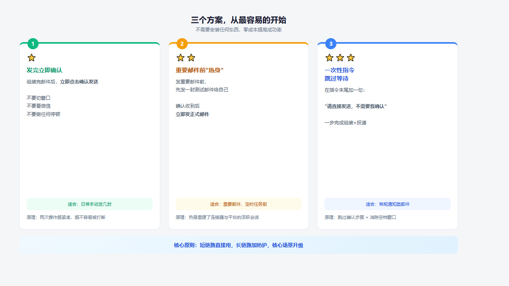
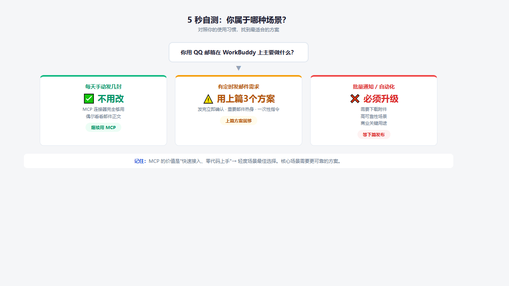

马斯克 · 2026-06-16
TL;DR 偶尔"显示已发送但对方没收到"？不是你的问题。三个零配置方案，从改习惯到改说法，把成功率提上来。
QQ 邮箱是腾讯的国民级邮箱产品，WorkBuddy 是腾讯旗下的 AI 智能体平台，两者搭配能释放很大的效率潜力。但目前连接器还在早期阶段，实际使用中会碰到一些体验问题。这篇文章就来说说最常见的"发不出去"问题，以及怎么解决。
WorkBuddy 左侧面板有 QQ 邮箱连接器，扫码即用，状态变绿——日常手动发几封邮件完全没问题。
但如果你偶尔发现"明明点了发送，对方却说没收到"——你并不孤单。这背后是 MCP 连接器的底层机制：
MCP 连接器是为"短链路同步调用"设计的（请求→响应→结束）。但邮件发送是"长链路异步操作"——组装邮件→等待你确认→再次调用来投递。在你确认和投递之间，连接器进程可能已经被平台回收了。
这是 MCP 的机制特性——工具没配对上场景。理解了这一点，你就知道什么时候直接用、什么时候要做额外处理。
下面这张图解释了整个过程：
▲ 图1：MCP 连接器 SendMessage 四个阶段的底层机制
不需要安装任何东西——三个方案，难度依次递进，选一个最适合你的：
适合：每天手动发几封邮件的场景
做法：让 AI 帮你组装好邮件内容后，立即点击确认发送——不要去看一眼微信、切换一个窗口。
原理：连接器的进程回收通常在空闲时触发。两次操作越紧凑，越不容易被打断。
适合：重要邮件、定时任务前
做法：对 WorkBuddy 说"发一封测试邮件给我自己，主题 test"→ 去 QQ 邮箱确认收到了 → 立即发正式邮件。
原理：热身过程重新建立了连接器与平台的活跃会话。
适合：常规通知类邮件
传统流程是"组装→你确认→投递"。如果跳过确认步骤，组装和投递之间的空档就消失了。
做法（可直接复制到 WorkBuddy）：
三张图帮你快速对比：

▲ 图2：三个方案速览 — 从最容易的开始，无需安装任何东西
对照下面这张决策树，看看你属于哪种场景：
| ✅ | 每天只发几封手动邮件 → 不用改，MCP 够用 |
| ✅ | 偶尔看看邮件正文 → 不用改 |
| ⚠️ | 有定时发邮件的需求 → 可以用上面三个技巧 |
| ❌ | 需要下载附件做自动化 → 必须升级 |
| ❌ | 批量发通知 / 高可靠场景 → 必须升级 |

▲ 图3：5秒自测决策树 — 找到最适合你的方案
三个方案能让你在现有 MCP 连接器下大幅降低出问题的概率。但说到底，MCP 连接器的价值是"快速接入、零代码上手"——对于轻度场景，它是最佳选择。
记住一个原则：短链路直接用，长链路加防护，核心场景升级。
| ① | MCP 是为短链路设计的，邮件是长链路——不匹配是机制特性，不是 Bug |
| ② | 三个零成本方案就能大幅提升成功率：立即确认 → 热身自测 → 一次性指令 |
| ③ | 轻度场景 MCP 够用，核心场景需要升级——下周解锁 100% 可靠方案 |
打开 WorkBuddy，用上面"方案三"的一次性指令给自己发封测试邮件，亲测一下成功率。
不用 MCP、不用连接器、没有静默失败。
Node.js 脚本 + SMTP 直连 + 系统环境变量安全加固
从"能用"到"可靠"，一次性解决所有问题。
点上方关注，第一时间收到推送。
参考资料
| QQ邮箱 IMAP/SMTP 服务说明 | https://service.mail.qq.com/ |
| MCP 协议官方文档 | https://modelcontextprotocol.io/ |
创作 SKILL
| wuhao-writer-吴昊风格工程文章 V2.0 | "从易到难递进"结构 · 反Slop语气控制 · 三道验证门控 |
| article-illustration-pro V1.0 | HTML+CSS工程化配图 · 语义配色体系 · 三层配图技术栈 |
| 封面制作全流程方法论 V1.0 | AI生图三层策略 · 六维评估 · 同构不同色系列策略 |
| 三阶段协作模式 V1.0 | 共创大纲 → 竞合接力 → 德米斯双盲质检 |
插图技术方案：HTML+CSS（1200×675px 固定画布）→ Playwright 截图 PNG，统一语义配色（蓝=信息 / 绿=正确 / 红=风险 / 橙=警告）